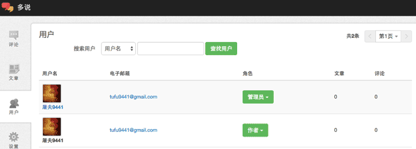
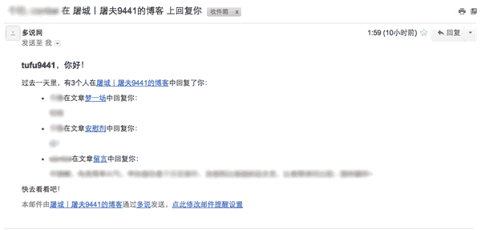

同步用户到多说实现文章被评论时的提醒功能
绝大多数国内的静态博客用户使用的第三方评论系统应该都是多说，然而默认情况下，只有在用户被回复时（即别人点击某条评论下的“回复”按钮），被回复者才会收到多说的提醒和邮件通知；当读者首次评论一篇文章时，文章的作者是无法收到通知的，只能自己去多说后台查看，这给一些强迫症患者带来诸多不便。
不过，多说官方提供了“同步用户到多说”的API接口，接口说明中提到：“同步用户信息到多说，用于历史评论中用户的展示，站点管理权限的匹配，以及文章被评论时的提醒等功能。”实现方式是通过提交POST请求。下面我们就用JavaScript写一段代码然后执行，简单粗暴地提交一个POST请求，利用这个接口实现我们需要的功能。（当然你可以用任何语言写成脚本然后执行，jQuery、Node.js、PHP等等都行。）
新建一个HTML文件，在其中输入以下代码：
1 |
|
其中，short_name为站点申请的多说二级域名；secret为多说后台设置中显示的站点密钥；user[0][user_key]为导入的用户在当前站点的ID；users[0][name]为导入用户的显示名，users[0][email]为接收提醒的邮箱地址。
将这些相关参数修改成自己站点对应的以后，保存为.html格式的文件，直接用浏览器打开执行，如果弹出的提示框中的返回信息包含“code”:0，说明执行正确，用户导入成功。这时多说的后台用户应该显示出导入的用户，如下图所示（其中第二个用户为通过POST请求导入的用户）：

最后，在主题中调用多说评论框代码的地方加上data-author-key=”1”这一项，例如：
1 | <div class="ds-thread" data-thread-key="<%- page.path %>" data-title="<%- page.title %>" data-url="<%- page.permalink %>" data-author-key="1"> |
其实这里的data-author-key的值只要跟刚才导入用户时输入的users[0][user_key]的值保持一致即可。这样一来，我们在Hexo发布的文章都会具备author-key=”1”的属性，从而能与多说后台user_key为1的用户对应上，由该作者发表的文章被评论时，多说便会知道，从而进行邮件通知。
但是，目前还无法实现文章被评论后实时收到邮件通知，邮件通知的频率是每天一封。这是由多说的系统设置决定的（已得到多说技术人员确认），用户暂时无法更改。每天凌晨会有一封邮件发送到邮箱，列出今日收到的评论，大概样子是这样的：
